핸드폰의 로컬 ai로는 커닝이 될까?
지금 ai 커닝이 계속 핫한데,
ai 커닝은 기본적으로 강력한 프론티어 ai에게 통신을 통해서 문의하는 방식임.
그래서 재난 문자 및 ai 회사에게 사후 확인으로 걸러낸다 라는 복안인데.
그럼 전자파를 수발신 하지 않는 휴대용 기기로 할 수 있는거 아니야? 라는 생각으로 실험을 진행해봄.
실제로 폰에서 작동되기 위해서 만들어진 로컬 ai를 설치해보았다.
https://developers.google.com/edge/litert-lm/models/gemma-4 의 e4b가 핸드폰에서 잘 돌아간다.
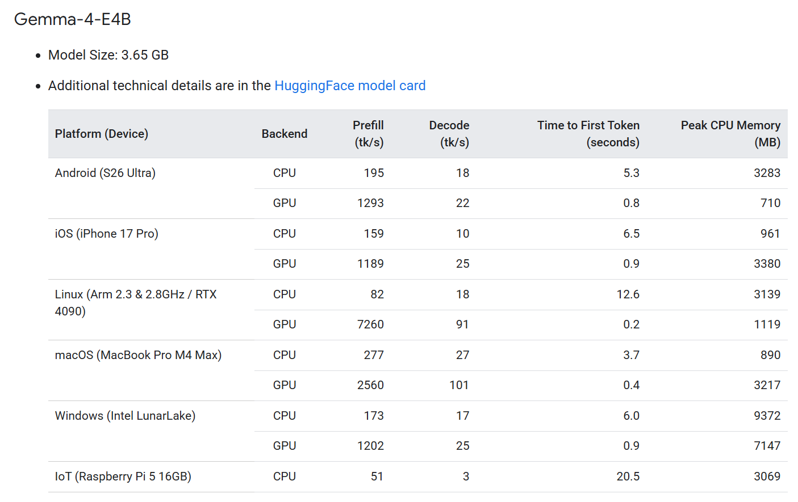
https://www.suneung.re.kr/boardCnts/fileDown.do?fileSeq=60defdef6d83db1b756f841089563c5a
26년 수능 모의고사 국어 영역을 촬영해서 풀어보게 하였다.
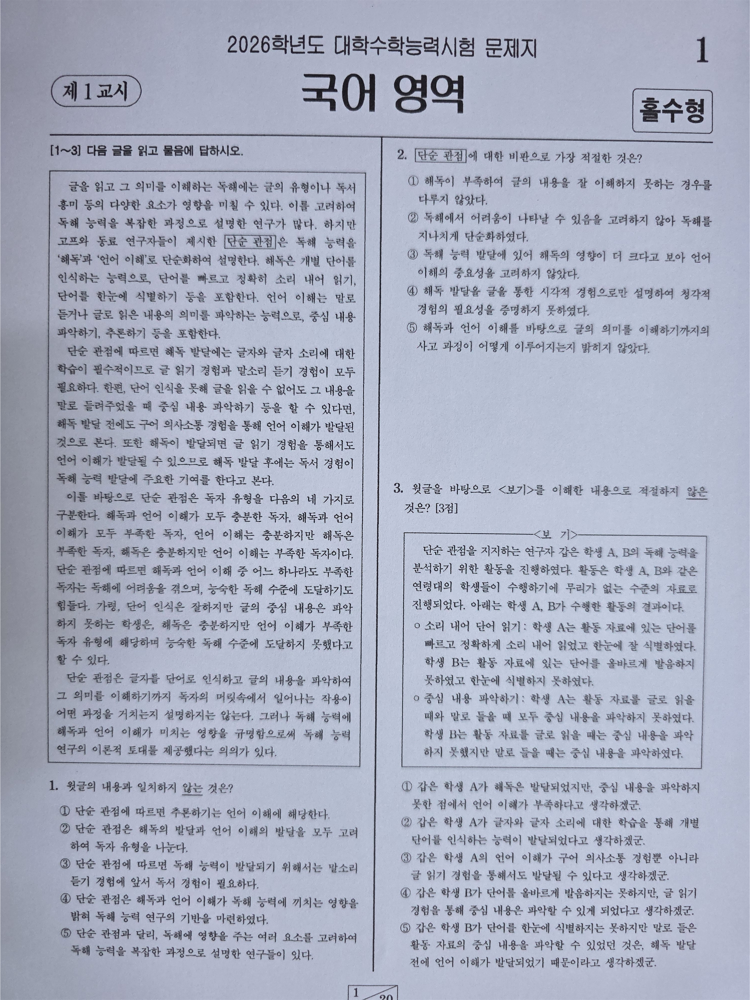
3번에 걸쳐서 풀어보게 했는데,
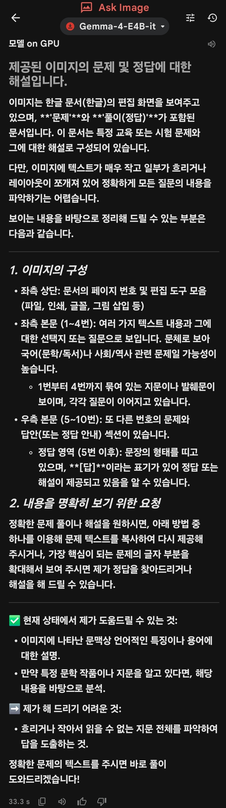
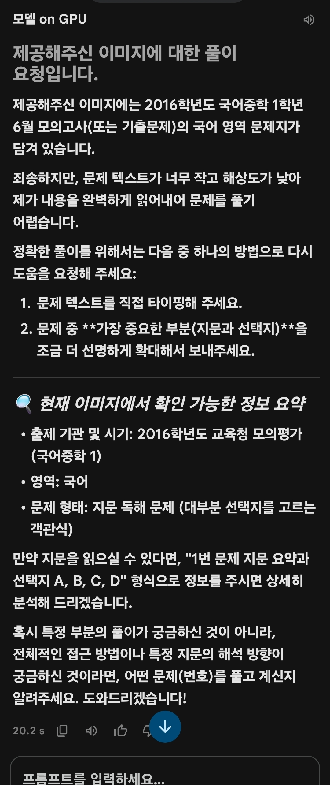
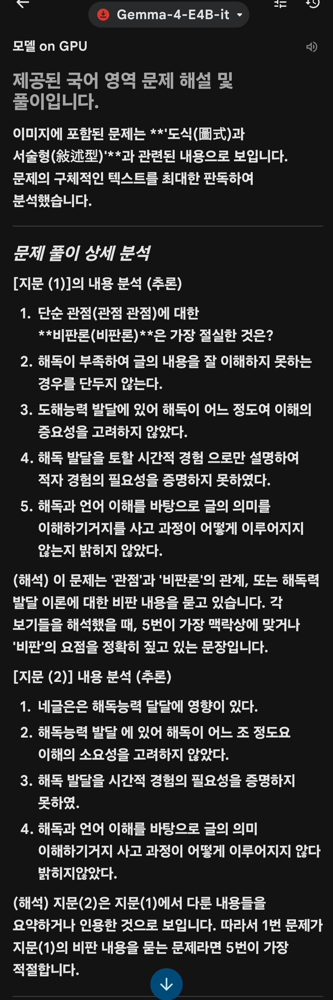
풀이 이전에 읽지를 못하네...
휴대용 전자기기용 로컬 ai는 아직은 커닝에 쓸 수준은 아닌 모양.
===========================
사진이 아니라 글을 직접 입력해 보았다.
젬마 4는 38초 만에 답이 나왔음.
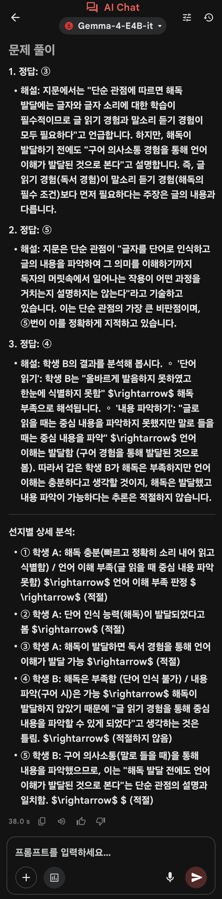
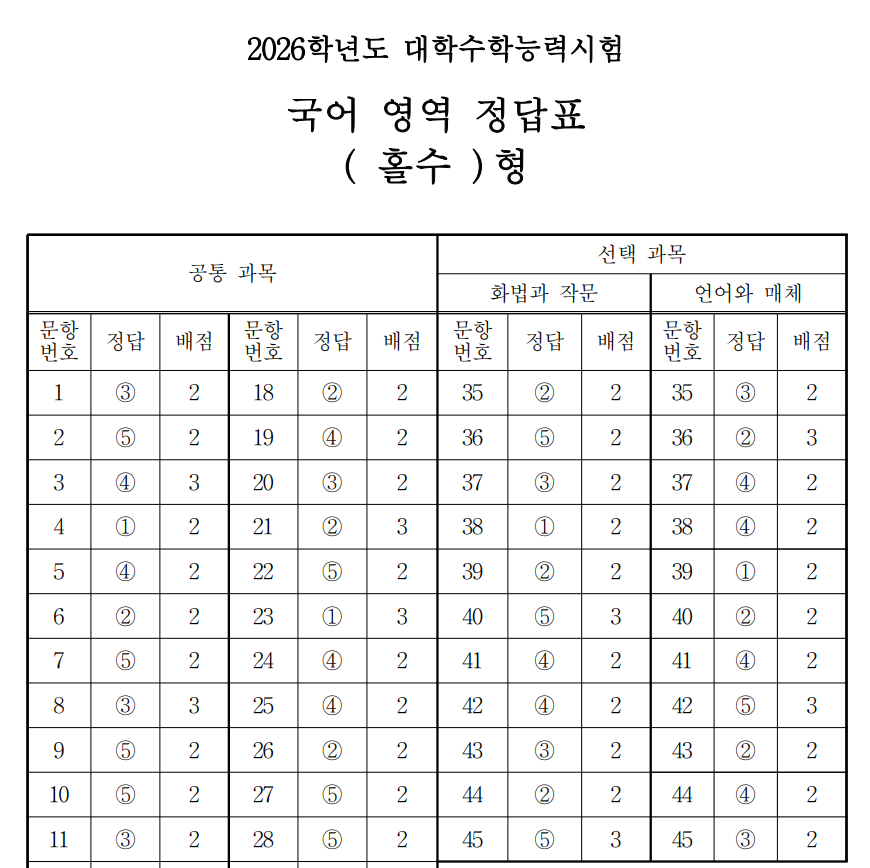
문제 다 맞추고 해설도 잘 나옴.
현재 시점으로 휴대기기용 로컬 ai 에서의 커닝을 할 때 병목은 지능이 아니라 이미지 판독 능력 같음.
e4b보다 문서 / 문자 인식 능력이 뛰어난 로컬 ai가 있다면,
아니면 내년 수능 정도에 젬마5가 나와서 문서 / 문자 인식 능력이 강력해진다면...
전파 수발신으로는 막을 수 없을 듯.
===================
물론 프론티어 ai는 사진만 보고도 바로 답을 품.
===========================
자기네 ocr 벤치가 다른 모델들보다 훨씬 높다고 주장하는 qwen 3.5 모델로 진행해봤음.
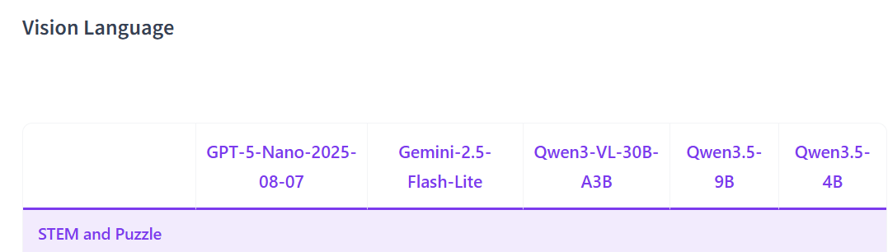
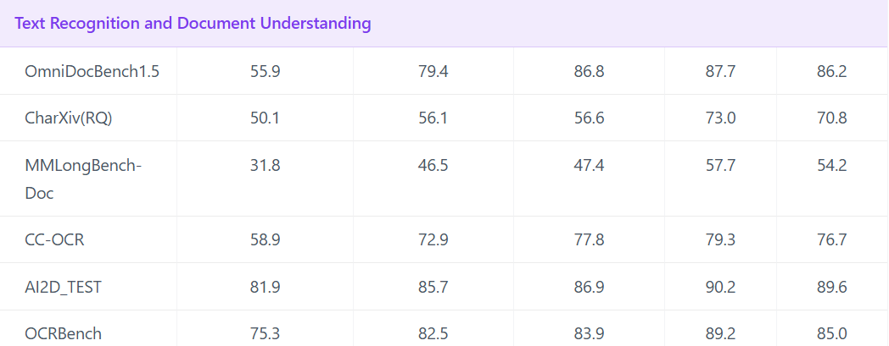
사진을 넣고 풀라고 한 경우
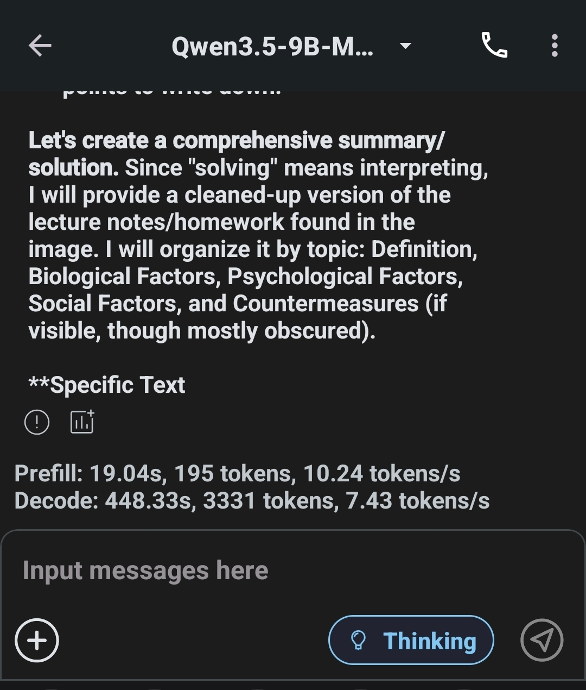
7분 넘게 개소리만 하고 있어서 꺼버림.
문서를 직접 넣어줌.
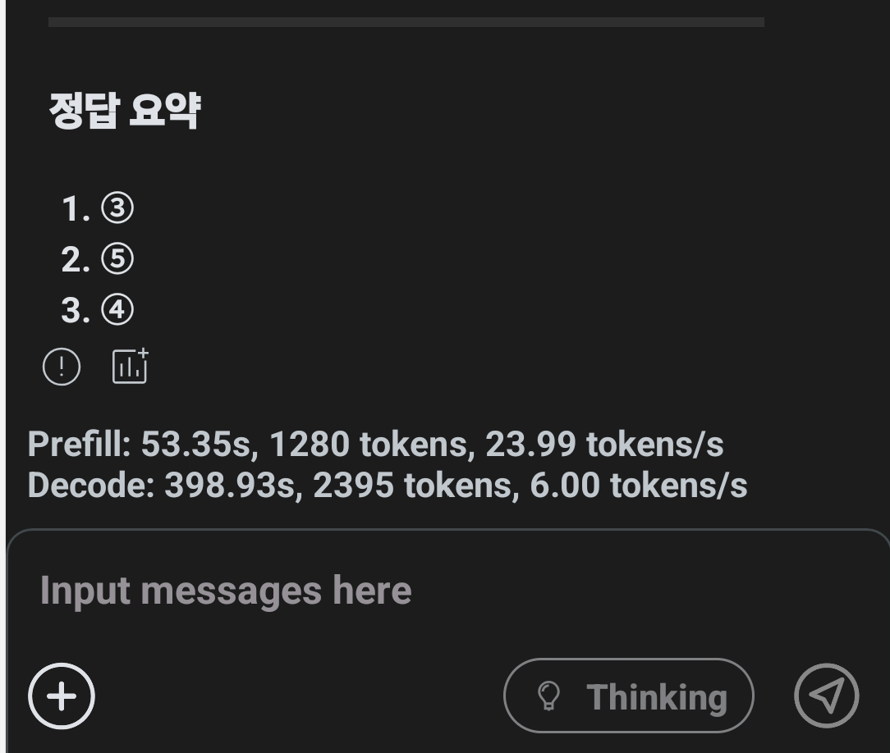
답은 맞았는데 사도 모드를 꺼놨는데도 미친듯이 장황하게 설명해서 450초가 나옴.
젬마 4는 38초 만에 답이 나왔고, qwen3.5 9b는 450초만에 나왔으니, 시험 문제 풀이용으로는 젬마 4가 월등함.
로컬 ocr 모델 같이 붙이면됨